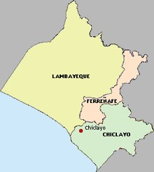

Región Lambayeque
Superficie y Población
Lambayeque está ubicado en la costa norte del territorio nacional, a una distancia de 765km de Lima,
la capital del Perú.
Superficie: 14 856.25 km²
Población: 1 197 260 hab.
49%
51%
Lambayeque está ubicado en la costa norte del territorio nacional, a una distancia de 765km de Lima, la capital del Perú.
Superficie: 14 856.25 km²
Población: 1 197 260 hab.
49%
51%
Sobre Lambayeque

Está dividido en 3 provincias y 38 distritos
Representa el 1,1% de territorio nacional
Ocupa el séptimo puesto del ranking del Índice de Competitividad Regional
*VAB: Valor Agregado Bruto de Lambayeque
Principales Sectores Económicos

Comercio
19% VAB

Manufactura
10% VAB

Construcción
9% VAB

Agricultura y Ganadería
8% VAB

Transporte y Mensajería
8% VAB